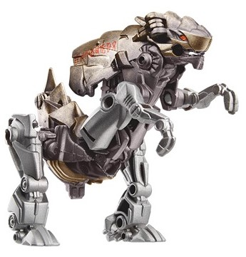
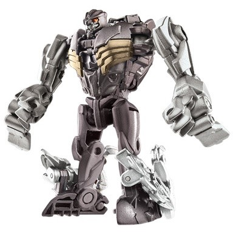
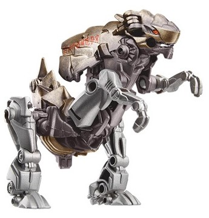
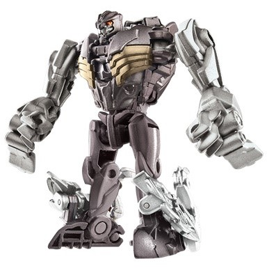
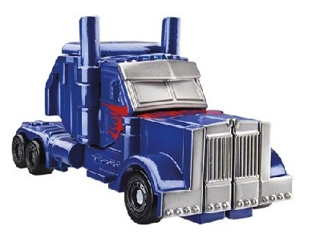
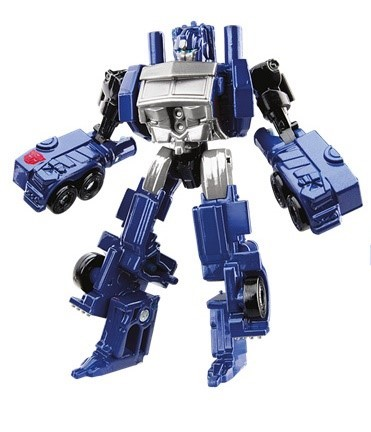

 
Size : Legion
Difficulty of Transformation : Easy
Color Scheme : Moderately light milky gray, dark milky semi-metallic brownish gray, and some dull metallic bronzish-gold, silver, and red
Individual Rating : 7.3
Allegiances
: Autobot
Set Price
: ~$12 (U.S.)
Overall Rating
: 7.2
(NOTE: Because this set is composed of repaints,
this is not a full-blown review. This mainly covers any changes made to
the set and the color scheme, and merely compares it to the original versions
of these molds. For a review on the original RotF Legends Optimus Prime,
go
here
. For a review on Prime Rippersnapper--
the mold used for Legion Grimlock-- go
here
.)
 Grimlock
Grimlock


Size
: Legion
Difficulty of Transformation
: Easy
Color Scheme
: Moderately light milky
gray, dark milky semi-metallic brownish gray, and some dull metallic bronzish-gold,
silver, and red
Individual Rating
: 7.3
Grimlock's base color
of plastic for most of his body is the same here as on his
general
retail release
-- a kind of dark brownish gray with some glitter mixed
in to make it semi-metallic. The light gray plastic used for his appendages
is a bit different this time, though-- in contrast to the official pics
used here, which are rather airbrushed a bit, they're actually a noticeably
duller shade. Still what I could classify as light gray, but just so, not
the nearly "pearly" gray the mass release has. It makes for less contrast,
but counteracting that-- and then some, in my opinion-- is the replacement
of glossy black paint on the original with a metallic bronze-gold paint,
used not just on the robot chest but also on the top of the fins, beast
head, and tail. It's a nice little addition to the color scheme, even if
it largely fits the same "earthy" shades as the mass release. As is fitting
for the "Cyberglyph" gimmick, Grimlock's name is spelled out in Cyberglyphs
on the right side of his back-fin. The face paint apps are the same colors
and in the same place as on the mass release.
No mold changes have
been made to this version of Grimlock (yes, his beast mode is mistransformed
in these stock pics).
 Optimus
Prime
Optimus
Prime


Size
: Legion
Difficulty of Transformation
: Very
Easy
Color Scheme
: Dark milky blue and
some black, silver, and moderately dark red
Individual Rating
: 7.1
If Grimlock wasn't a
big change, Optimus here is even less so from the
mass
release
. All of the base plastic colors are the same-- black in the
same places, dark milky blue in the same places as well. Most of his silver
is also in the same place, though some more has been added to the stomach
and upper legs, helping to break up all that blue a titch more. The red
paint apps are also changed a little-- the flame apps on the sides of his
truck mode are smaller, but the flame apps on his truck nose slightly more
extensive, with "Prime" written in blue Cyberglyph in said flames (small
enough you'd be forgiven for not noticing it-- it doesn't look like the
stock photographer did, given the angle of the vehicle mode image). Oh,
and the Autobot symbol has been moved from his left leg to his right lower
arm, for some reason. Still pretty much the same with a similar vibe.
No mold changes have
been made to this version of Optimus (despite the official pics, he has
the same clip-on wheels as the mass release.)
This Legion 2-pack not
only uses the wrong designs for both of the characters (still), but the
changes are too minimal to really warrant another purchase for all but
the most diehard completists (Optimus in particular). Both of these molds
have also been released a ton already, and in better colors, too. Generally
there's just no need for this pack and it's best ignored, even if the individual
toy molds themselves are alright for the size.
Review by Beastbot
(Pics from Hasbro .)